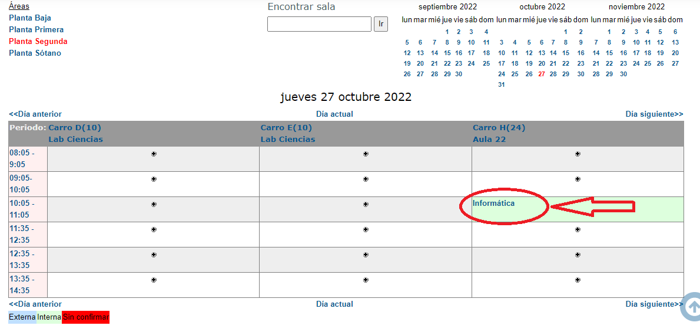
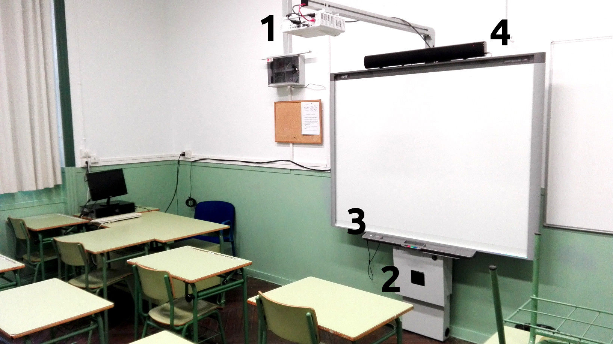

1. Medios informáticos del centro
- 1.1. Carritos de portátiles
- 1.2. Equipos del profesorado en aulas generales
- 1.3. Usuarios y contraseñas
- 1.4. Aulas de informática
- 1.5. Otros medios
- 1.6. Gestión de incidencias
- 1.7. Preguntas frecuentes
En esta sección presentamos un resumen de las características de los medios informáticos con los que cuenta el IES Celia Viñas para uso del profesorado y el alumnado: tipología, ubicación, organización y gestión.
1.1. Carritos de portátiles
¿Qué son los carritos de portátiles?
Son carritos móviles con capacidad entre 12 y 30 ordenadores portátiles cada uno.
El centro dispone de 6 carritos de estas características distribuidos de la siguiente forma:
SÓTANO
| Carro | Capacidad | Ubicación |
| F | 24 portátiles | Ateca |
PLANTA BAJA
| Carro | Capacidad | Ubicación |
| G | 30 portátiles | Junto a secretaría |
PLANTA PRIMERA
| Carro | Capacidad | Ubicación |
| A | 30 portátiles | Dpto. de Física y Química |
| I | 30 portátiles | Biblioteca |
PLANTA SEGUNDA
| Carro | Capacidad | Ubicación |
| B | 20 portátiles | Lab. de Ciencias Naturales |
| H | 24 portátiles | Aula 22 |
¿A quién están destinados?
Los ordenadores portátiles de los carritos están destinados al alumnado para su uso durante el horario de clases y siempre bajo la supervisión y responsabilidad de un miembro del profesorado.
¿Cómo puedo utilizarlos?
Para usar un carrito de portátiles, el procedimiento general es el siguiente:
- Reservarlo en Moodle Centros (el procedimiento se describe en el siguiente apartado).
- Conseguir la llave de la dependencia donde se ubiquen los carritos que se han reservado (las llaves están en Conserjería). Los carritos ubicados en aulas pueden conseguirse sin llave, puesto que el aula, normalmente, estará en uso.
- Conseguir la llave del carrito en Conserjería o en Jefatura de Estudios. También te entregarán un parte de uso.
- Acceder a la dependencia y desenchufar los carritos de la toma de corriente.
- Llevar los carritos hasta el aula. Aunque son pesados, se transportan con facilidad porque disponen de ruedas.
- Repartir los ordenadores entre el alumnado y velar por que se usen adecuadamente. Es imprescindible que el alumnado se apunte en el parte de uso. Es la única forma de prevenir actos vandálicos y localizar a los responsables en caso de que se produzcan.
- Al final de la clase, vigilar la reposición de los ordenadores a sus lugares originales. Para que los siguientes compañeros no los encuentren descargados, hay que dejarlos conectados a sus respectivos cargadores.
- Devolver el carrito a la dependencia en la que se encontraba, enchufarlo de nuevo a la corriente y devolver la llave de la dependencia en Conserjería.
- Devolver la llave del carrito en la Jefatura de Estudios, junto con el parte de uso.
MUY IMPORTANTE: Rellenar adecuadamente el parte de uso es la única manera de prevenir actos vandálicos y poder así mantener los carritos en el mejor estado posible. Rogamos para ello vuestra colaboración.
Procedimiento para reservar un carrito de portátiles
La reserva de carritos de portátiles ya no se realiza en papel, sino a través de Moodle Centros.
El procedimiento es el siguiente:
-
Entrar en https://iescelia.org/reservas. Se te pedirá tu usuario y contraseña de Moodle Centros.
-
Pulsar en la flecha para Mostrar Bloques de la parte derecha
-
Nos aparecerá el bloque Reservar locales y un enlace donde tenemos que pulsar:

-
En la página del Gestor de Reserva de Salas aparecen, en la parte izquierda, las distintas plantas del centro y un calendario. Seleccionamos la planta donde damos necesitamos el carro de portátiles y el día que queremos realizar la reserva.

-
Nos aparecen las reservas actuales, para ese día y la planta seleccionada.

-
En la parte inferior de la pantalla, podemos seleccionar por días, por semanas o por meses.
-
Si seleccionamos por semanas, podemos seleccionar cada uno de los carros de esa planta. Para hacer la reserva, pulsar en la hora libres deseada sobre el signo +

-
Nos aparece una ventana donde tendremos que rellenar la siguiente información:
- Reserva para: Persona o departamento que realiza la reserva
- Descripción completa: Indicar la materia y curso con el que se va a utilizar
-
Pulsamos en el botón de Guardar cambios.

En caso de dudas con este procemiento, no dudes en contactar con nosotros a través de Séneca, de email (buzontic@iescelia.org) o personalmente.
1.2. Equipos del profesorado en aulas generales
Todas las aulas del centro están equipadas con, al menos, un ordenador de sobremesa y un cañón/proyector con pizarra interactiva (PDI) o una TV de gran formato. Algunas tienen otra equipación adicional que se describe más abajo.
Estos ordenadores están destinados al uso del profesorado durante el ejercicio de su docencia.
Actualmente, hay muchas modalidades de aula con pizarra interactiva diferentes en el centro. Aunque todos tienen la misma funcionalidad, varían ligeramente en su forma de uso. Además, los proyectores que se van averiando están siendo sustituidos por televisores de gran formato.
Aulas con pizarras Promethean
Estas PDI están obsoletas y no funcionan correctamente como tales con los sistemas operativos recientes. Solo es posible utilizarlas como proyectores.
El procedimiento de puesta en marcha de estas prizarras es el siguiente:
- Encender el proyector.
- Encender el ordenador.
- Si es necesario, encender los altavoces. El interruptor está en un lateral de la pizarra. Si están apagados, el interruptor lucirá en rojo. Si están encendidos, lo hará en verde.
- Introducir el usuario y contraseña para usar el ordenador. Para más información sobre este punto, véase el apartado “Usuarios y contraseñas”

Aulas con pizarras blancas y cañones Optoma
Todos estos ordenadores se encienden pulsando el interruptor del mismo. Puede ser necesario conectar la electricidad encendiendo una regleta que suele estar acoplada a la mesa o situada en el suelo.
Estas PDI necesitan el uso de un puntero específico que puede solicitarse al equipo de coordinación TDE.
Para utilizarlas, el procedimiento es el siguiente:
- Encender el proyector.
- Encender el ordenador.
- Si es necesario, encender los altavoces.
- En algunas aulas, el interruptor de los altavoces está situado en un cajetín blanco en la pared. El cajetín dispone de tres botones: on/off, subir volumen y bajar volumen. Manteniendo pulsado el botón on/off, los altavoces se encienden y se apagan, pero, si se pulsa solo un instante, se cambia de canal. Los ordenadores están conectados en el canal 1 (por el canal 2 no se escuchará nada).
- En otras aulas, el interruptor es un mando giratorio situado tras uno de los altavoces. Ese mando también controla el volumen. Lo normal (que no lo recomendable) es que siempre estén encendidos. Si los apagamos al finalizar la clase, aumentaremos la vida útil de los altavoces.
- Introducir el usuario y contraseña para usar el ordenador. Para más información sobre este punto, véase el apartado “Usuarios y contraseñas”

Aulas con pizarras Smartboard
Estas pizarras están controladas por un miniordenador llamado NUC incorporado bajo la misma. Puede accionarse con el dedo, sin ningún puntero.
En estas aulas existe un segundo ordenador, situado en la mesa del profesor, que solo sirve para proyectar imágenes (no como pizarra interactiva), y que puede manejarse con el teclado y el ratón convencionales.
Para usar estas pizarras con el miniordenador NUC, el procedimiento es:
- Encender el proyector.
- Cuando la imagen azul se vea claramente en la pizarra y aparezca la leyenda “HDMI” sobreimpresionada, encender el ordenador NUC. El NUC es la cajita negra que hay bajo la pizarra, casi a ras de suelo.
- Encender el tablero táctil con el interruptor grueso que hay en la botonera la pizarra.
- Encender, si es necesario, los altavoces (sobre la pizarra). Tienen dos canales, y se cambia de uno a otro pulsando el botón de encendido un instante. Si se mantiene pulsado, los altavoces se apagan. La luz roja indica “altavoz apagado”. La luz verde es el “canal 1”, al que está conectado este ordenador.
Observa que este ordenador se usa exclusivamente con la pizarra interactiva (como si fuera una tableta gigante), pero es posible conectarle un teclado y/o un ratón en los puertos USB que hay en el NUC.

Si prefieres usar esta PDI como simple proyector con el ordenador de sobremesa, el procedimiento es:
- Encender el proyector.
- Encender el ordenador.
- Encender, si es necesario, los altavoces (sobre la pizarra). Tienen dos canales, y se cambia de uno a otro pulsando el botón de encendido un instante. Si se mantiene pulsado, los altavoces se apagan. La luz roja indica “altavoz apagado”. La luz naranja es “canal 2”, al que está conectado este ordenador.
Fíjate que la botonera de la pizarra y las funciones táctiles no están contectadas con este ordenador. Para hacer uso de esas funciones, hay que utilizar el NUC (véase más arriba, “Modelo 3 con la PDI Smartboard”)

Aulas con televisiones de gran formato
Los proyectores que se averían se están sustituyendo, cuando es posible, por televisores de gran formato (65 y 75 pulgadas). Esto también se está haciendo en los departamentos que se usan para impartir clases.
Estos televisores sirven para proyectar la imagen y el sonido del ordenador del profesorado. Para usarlos, el procedimiento es:
- Encender el ordenador y el televisor (da igual el orden). El televisor puede encenderse con el mando a distancia o pulsando directamente el botón de la carcasa, que suele ubicarse en el marco inferior.
- Ajustar el nivel de volumen del ordenador y/o del televisor.
Es importante que recordemos apagar el televisor al finalizar la clase con el fin de prolongar su vida útil.
Aulas de los ciclos formativos
Las aulas de los ciclos formativos tienen su propio equipamiento derivado de la actividad lectiva que se lleva a cabo en ellas y no se describe en este documento.
1.3. Usuarios y contraseñas
Todos los ordenadores del centro, tanto los de sobremesa como los portátiles, tienen creado el usuario estándar de la Junta de Andalucía.
- Usuario: usuario
- Contraseña: usuario
Si alguien necesita disponer de un usuario personalizado en alguno de los ordenadores, puede solicitarlo al coordinador TDE. No obstante, se recomienda encarecidamente no dejar archivos personales en ninguno de los ordenadores del centro.
1.4. Aulas de informática
El centro, debido a la falta de espacio, no dispone de ningún aula de informática específica más allá de las propias de los ciclos formativos.
Sin embargo, cualquier aula del centro puede convertirse temporalmente en aula de informática usando los abundantes carritos de portátiles que existen distribuidos por el centro (véase sección “Carritos de portátiles”).
1.5. Otros medios
El IES Celia Viñas dispone de otros muchos medios relacionados con las TIC. Sus características son tan variadas que enumerarlas aquí no tiene sentido. Nos limitaremos a dar una lista de los medios con los que contamos.
Para cualquier consulta o incidencia relacionada con su uso, por favor, recurre al coordinador TIC.
- Ordenadores e impresoras de uso común en la sala de profesores y departamentos.
- Ordenadores y proyectores en las aulas específicas (taller de tecnología, arte, laboratorios, emprendimiento…)
- Ordenadores del aula de pedagogía terapéutica.
- Ordenadores para uso del alumnado en la biblioteca.
- Ordenador para uso del profesorado encargado de la biblioteca.
- Ordenadores e impresoras del personal de administración y equipo directivo.
- Ordenador ubicado en la conserjería y conectado al televisor del hall para proyección de presentaciones y vídeos.
- Ordenador y proyector del salón de actos.
- Ordenadores y proyectores de las aulas específicas de los ciclos formativos de informática.
- Servidor TIC y toda la infraestructura de red cableada e inalámbrica.
- Equipación propia del Aula de Tecnología Aplicada (Ateca).
1.6. Gestión de incidencias
Procedimiento general
La mayor parte de las incidencias cotidianas tienen una fácil solución que cualquier usuario puede intentar (véase la sección “Preguntas frecuentes”)
Si la incidencia parece más grave, se debe poner en conocimiento del coordinador TDE para acometer su resolución con la mayor agilidad posible. Esto es particularmente importante en el caso de los equipos del alumnado que pasan por muchas manos al cabo del día. Si todos somos diligentes en ello, podremos disfrutar de una equipación en buen estado durante mucho tiempo.
Cómo contactar con el coordinador TDE
Es muy importante poner la incidencia por escrito. Comentársela al coordinador TDE en un pasillo o en el semáforo de la rambla a las tres de la tarde puede tener un cierto valor terapéutico, pero poca utilidad práctica.
Existen dos maneras de comunicar una incidencia de forma eficaz. Cada cual puede escoger la que le resulte más cómoda.
Forma número 1:
- Enviar un mensaje por Séneca a coordinador TDE, intentando ser explícito/a con el problema y el equipo al que afecta.
Forma número 2:
- Enviar un email a la dirección buzontic@iescelia.org, intentando ser explícito/a con el problema y el equipo al que afecta.
¿Qué significa “ser explícito/a con el problema y el equipo al que afecta”?
- Ejemplo de mensaje poco explícito que no sirve para nada: “Ordenador no funciona”.
- Ejemplo de mensaje explícito que facilita la resolución rápida del problema: “El ordenador del aula X se enciende pero no emite ninguna imagen en el monitor. Ha ocurrido esta mañana a las 12:30”.
El peliagudo caso de los carritos de portátiles
Los carritos de portátiles son una fuente inagotable de incidencias porque son usados durante muchas horas al día por un alumnado cambiante.
En estos ordenadores hemos encontrado de todo: teclas arrancadas, chicles pegados, pantallas partidas y otras cosas de las que preferimos no dejar constancia por escrito.
Por ello rogamos la máxima colaboración en el uso de esta equipación. Es la única manera de mantenerla en un estado razonable de funcionamiento. Basta con seguir el protocolo de actuación que hemos sugerido más arriba.
- Pedir al alumnado que avise de cualquier anomalía detectada en los portátiles antes o durante su uso.
- Informar lo antes posible de la incidencia al coordinador TDE.
Con esta simple precaución, podremos atender las incidencias con celeridad, mantener los carritos en un estado razonable de funcionamiento y atajar los actos de vandalismo.
1.7. Preguntas frecuentes
En esta sección enumeraremos las preguntas más habituales y sus posibles respuestas.
No hay internet
Siempre se puede intentar desactivar y volver a activar la conexión de red. Apagar y encender el ordenador tendrá el mismo efecto, pero es mucho más lento. Es conveniente aprender a hacer lo primero.
A menudo, sobre todo en los días lluviosos y en la segunda planta, hay un corte de corriente puntual que afecta a algunos equipos e imposibilita la conexión a la red de los ordenadores de esa planta.
En el cuadro de interruptores de la segunda planta hemos colocado las instrucciones paso a paso para que cualquier profesor/a pueda volver a poner en marcha la conexión a la red.
Si ninguno de estos trucos funciona, por favor, contacte con el Coordinador TDE (véase “Gestión de incidencias”)
No hay sonido
Casi siempre la causa es una de estas tres:
- Los altavoces están apagados. Se encienden de forma diferente según el modelo de altavoz que exista en ese aula (Consúltese el apartado “Equipos de profesorado de las aulas generales”)
- Los altavoces están “escuchando” en un canal distinto del que deberían. En algunas aulas, los altavoces disponen de dos canales de entrada. A veces, por accidente o maldad premeditada, acaban conectados al canal incorrecto (Consúltese el apartado “Equipos de profesorado de las aulas generales”)
- El cable de audio está desconectado o conectado en el lugar incorrecto. El cable de audio es un minijack convencional. Debe salir del conector verde del ordenador y llegar a la entrada de los altavoces (a veces, a un conector en la pared).
Si ninguna de estas tres soluciones funciona, por favor, contacta con el Coordinador TDE (véase “Gestión de incidencias”)
No se ve nada en el monitor
Comprueba que el monitor está encendido.
Comprueba la conexión del cable VGA al ordenador y al monitor.
Asegúrate de que el splitter VGA (la cajita metálica que está conectada al ordenador y al monitor) está encendido.
Si todas estas comprobaciones son correctas y el monitor sigue sin mostrar la imagen, por favor, contacta con el Coordinador TDE (véase “Gestión de incidencias”)
No puedo entrar con mi usuario
El único usuario existente en los ordenadores es el estándar (usuario/usuario). Si alguien necesita un usuario de uso individual, puede solicitarlo al coordinador TDE. Ten en cuenta que, si el ordenador se cambia o formatea (algo que ocurre de vez en cuando, en caso de avería grave), perderás el usuario y todos tus archivos.
Los ordenadores del carrito no se encienden
Probablemente se quedaron desconectados y se les ha agotado la batería. Asegúrate de que quedan conectados al cargador tras su uso, y no te olvides de enchufar el carrito completo a una toma de corriente.
El ordenador NUC de las PDI Promethean Smart no proyecta nada en la pantalla
Con estos ordenadores es especialmente importante encender en primer lugar el proyector y, solo cuando aparezca la leyenda “HDMI” en la pantalla, encender el NUC. Hacerlo en otro momento provoca que el equipo no reconozca el proyector y, por lo tanto, no emita ninguna imagen.
Si ya te ha sucedido, puedes apagar el NUC manteniendo el botón de Power pulsado durante cinco segundos, hasta que la luz azul se apague. Luego, prueba a encenderlo de nuevo (¡cuando la leyenda “HDMI” apareza proyectada!)
Necesito instalar un programa
Los usuarios convencionales no tienen privilegios para instalar software adicional por motivos obvios de estabilidad de los sistemas. Si necesitas instalar cualquier programa que no esté disponible, por favor, contacta con el Coordinador TDE con la mayor antelación posible. Hacerlo cinco minutos antes de la clase en la que necesitas ese programa imperiosamente no suele dar buenos resultados.
Error de seguridad al conectar con Séneca o con Moodle Centros
Esto no es un problema de Linux ni del navegador web, sino una anomalía debida al certificado de seguridad que utilizan Séneca y Moodle Centros (así como otros organismos oficiales de la Junta de Andalucía y de otras administraciones públicas). Estos certificados están emitidos por la Fábrica Nacional de Moneda y Timbre, que no es un organismo reconocido por versiones antiguas de Firefox o Chrome.
Este problema se solventa actualizando el navegador web. Si te ocurre en alguno de los ordenadores del instituto, por favor, contacta con el coordinador TDE para comunicarle el problema.
Mis archivos han desaparecido
Probablemente el ordenador ha sido formateado o cambiado. Los ordenadores del instituto son de uso compartido y no deberíamos dejar archivos personales en ellos o, al menos, tendríamos que disponer de copias de seguridad de todo. En cualquier momento, pueden sufrir una avería y necesitar ser formateados o cambiados por otros sin previo aviso.
Necesito instalar Microsoft Windows
Todos los equipos informáticos del centro disponen, como es lógico, de software con licencia legal. Eso incluye el sistema operativo. Existen multitud de alternativas libres al software más popular para los sistemas Microsoft Windows o MacOS. En ultima instancia, se puede intentar emular el entorno de Windows por diversos medios.
Por favor, ponte en contacto con el Coordinador TDE para estudiar tus necesidades concretas y buscar la mejor solución (Aclaración: no suele ser buena idea hacerlo el día de antes de la clase en la que necesites el software funcionando).
Necesito disponer de un (ordenador/monitor/impresora/lo-que-sea)
Si necesitas cualquier equipación adicional a las disponibles, por favor, contacta con el coordinador TDE lo antes posible. Podemos mover equipos, cambiar instalaciones y, en general, hacer bastantes malabarismos con el material disponible, pero necesitaremos tiempo para organizarlo.
Si lo que necesitas es adquirir material nuevo para tu departamento o tu aula, tanto inventariable como consumible, recuerda que esto es competencia del equipo directivo, aunque siempre puedes hablarlo antes con el coordinador TDE para obtener una orientación técnica o para comprobar si ese material ya existe en alguna dependencia del instituto.